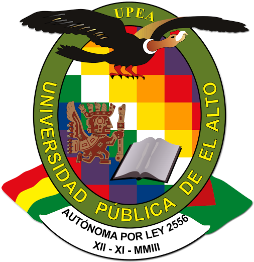
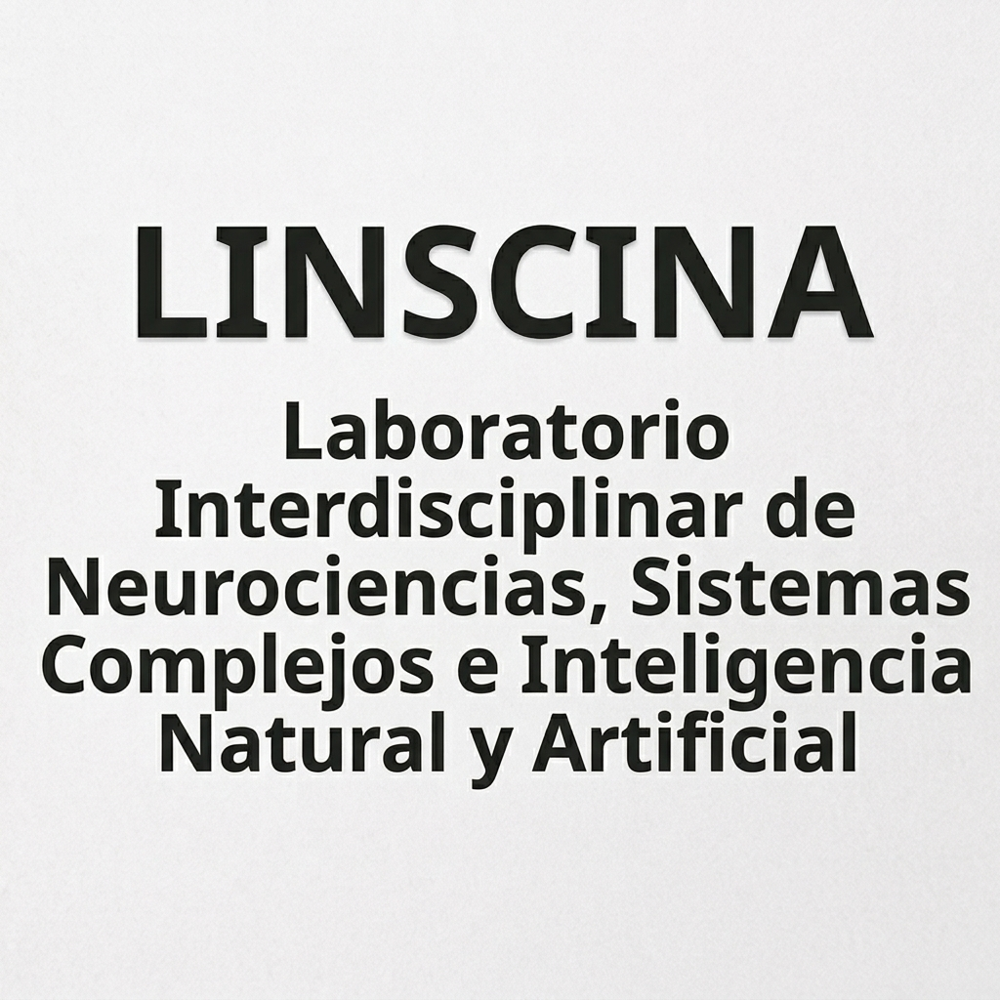
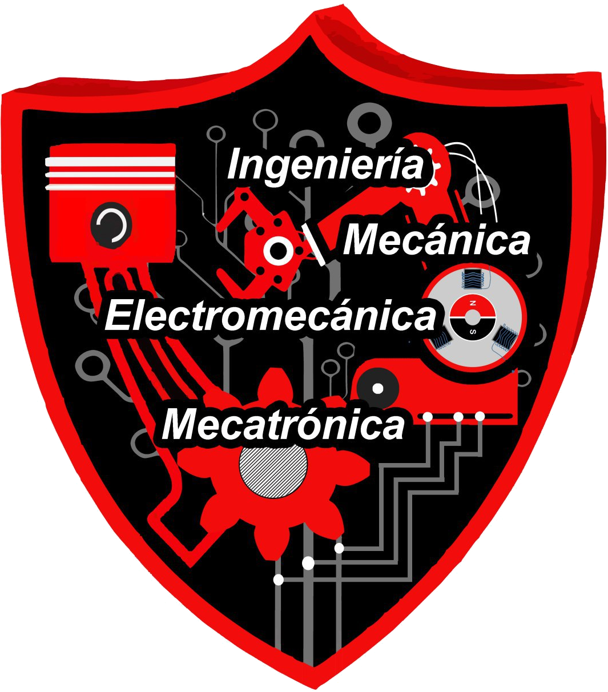

Sede del curso
Fechas
Del 23 al 27 de noviembre de 2026
Sede presencial
Instituto de Investigación Matemática (IIMAT) – UMSA
Calle 27 de Cota Cota, Campus Universitario
Edificio de Ciencias Puras y Naturales, 1er piso
La Paz, Bolivia
El curso también se podrá seguir de forma virtual.
Las actividades presenciales serán en el IIMAT, Edificio de Ciencias Puras y Naturales, ingresando por la Calle 27 de Cota Cota.
Sobre el curso
¿Cómo surgen las opiniones colectivas? ¿Por qué las sociedades alcanzan consensos, se fragmentan o se polarizan? ¿Qué papel desempeñan las redes de interacción, la influencia social y la difusión de información en estos procesos?
El XXIV Curso Boliviano de Sistemas Complejos propone explorar estas preguntas desde la física, las matemáticas y la ciencia de sistemas complejos, abordando la sociedad como un entramado dinámico de individuos cuyas interacciones dan lugar a fenómenos colectivos emergentes.
A través de modelos basados en agentes, teoría de redes, dinámica de opiniones y análisis de datos de redes sociales, el curso examina los mecanismos que conducen al consenso, la fragmentación, la polarización y la formación de comunidades. Asimismo, conecta los fundamentos teóricos con investigaciones y aplicaciones empíricas en escenarios sociales, políticos, electorales y de movilización colectiva.
Modalidad
Presencial y virtual. Podrás participar en el campus o conectarte a distancia.Sede
Instituto de Investigación Matemática (IIMAT), UMSACalle 27 de Cota Cota, Campus Universitario
Edificio de Ciencias Puras y Naturales, 1er piso
Ver en Google Maps
Auspiciadores

Universidad Pública de El Alto
LINSCINA
Grupo de Sistemas Complejos
Carrera de Ingeniería Mecánica - UTO